Des petits ajouts pour donner du punch à votre cuisine
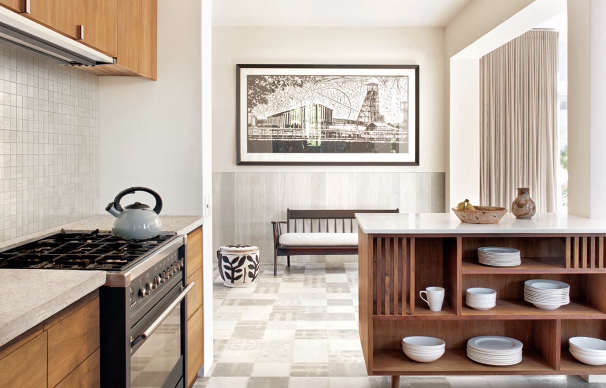
Des petits ajouts pour donner du punch à votre cuisine
Admirez les plus belles cuisines du Québec que nous vous présentons dans ce numéro, et vous repérerez sûrement ces dix tendances déco. En 2019, elles sont incontournables. Les avez-vous adoptées ?
1- La tablette intégrée au dosseret
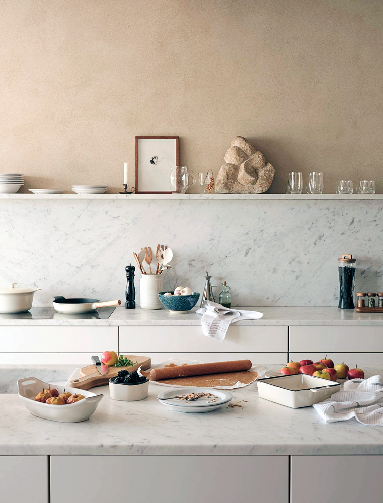
Les cuisines actuelles tendent de plus en plus vers un look épuré. Comme elles se trouvent souvent dans une aire ouverte formée avec le salon ou la salle à manger, on essaie de plus en plus de se détourner du mobilier de cuisine traditionnel et d’opter pour des éléments qui se marient au style général de notre intérieur. Ainsi, la tablette intégrée au dosseret a gagné en popularité et remplace, lorsque l’aménagement le permet, les armoires supérieures. En utilisant le même matériau que celui du dosseret, on crée un effet élégant qui agrandit la pièce. Parfois, la tablette peut être encastrée à la façon d’une niche ou former un rebord, tel un muret architectural.
2- L’évier poste de travail
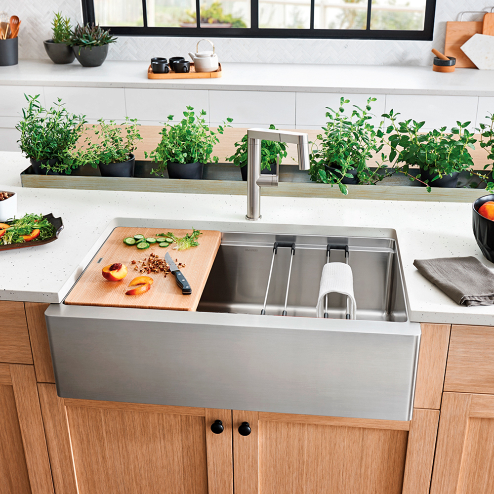
Il n’y a pas que les électroménagers qui rivalisent d’innovation dans la cuisine. L’évier aussi a bien évolué dans les dernières années ! Aujourd’hui, les modèles les plus populaires sont très larges et profonds. On trouve entre autres des modèles en inox et en granit (noir ou coloré), souvent installés sous-plan. Parfois, ils arborent un tablier en inox ou en porcelaine dans un style plus champêtre. Quoi qu’il en soit, l’évier est un élément crucial dans le triangle d’activité de la cuisine. C’est la raison pour laquelle on voit de plus en plus de cuisines avec deux éviers, l’un près du lave-vaisselle et l’autre sur l’îlot ou près de la cuisinière. Ils possèdent de nouvelles fonctionnalités qui facilitent la préparation des repas, telles que les douchettes, les égouttoirs, les grilles, les paniers à vaisselle ou encore les surfaces de coupe et de préparation.
3- Les comptoirs en Dekton
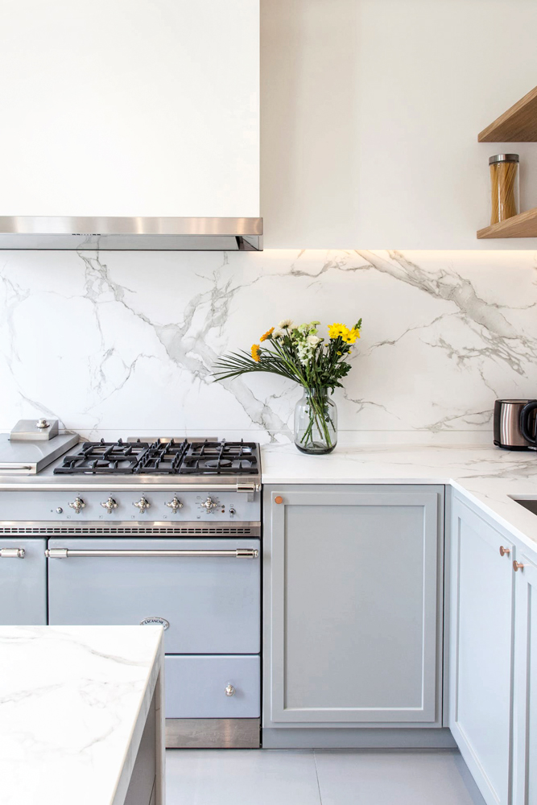
Introduit par la compagnie espagnole Consentino, le Dekton est une révolution dans la famille des surfaces de comptoir ultracompactes. Il est composé de quartz, de verre et de porcelaine, et ne contient pas de résine. Son principal avantage, outre son extrême résistance, est qu’il est offert dans des épaisseurs très fines et dans des formats géants jamais vus auparavant. Le Dekton reproduit à la perfection le look de la pierre naturelle dans différents finis et différentes épaisseurs. Ainsi, il est possible d’avoir des comptoirs et des dosserets au look de marbre, profilés et design, sans aucun entretien.
4- Le laminé européen
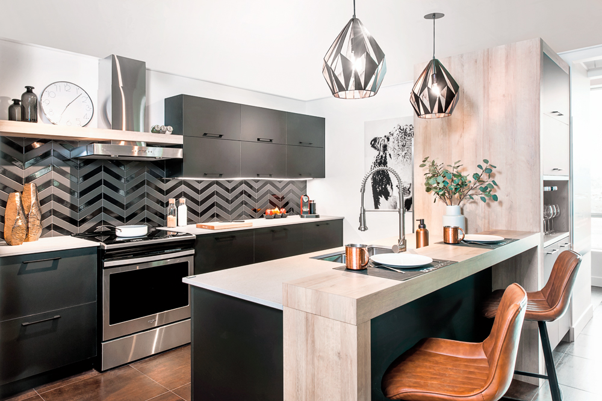
Il y a fort à parier que vous ne feriez pas la différence entre un panneau d’armoire de cuisine en bois et un panneau d’armoire en laminé européen à effet bois, même en vous approchant de très près ! Les portes en laminé européen peuvent être mates ou reproduire de façon très réaliste une variété de reliefs et de textures à l’aide d’une presse qui y imprime le motif souhaité (veinage du bois, effet pierre ou géométrique…). Scellées sur tous les côtés, elles sont ultrarésistantes et très faciles d’entretien. Ce produit, conçu en Italie, devient de plus en plus prisé au Québec. On découvre son look raffiné, ses nombreux choix de couleurs et de textures, mais surtout son bon rapport qualité-prix.
5- La cuisine intelligente
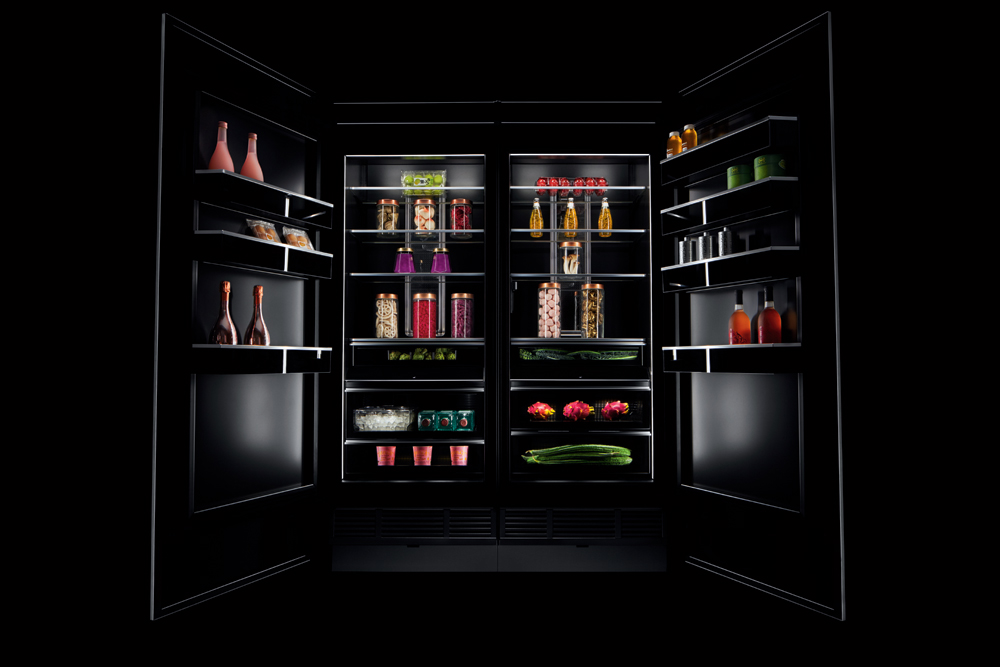
Des nouveautés technologiques apparaissent chaque mois, et la cuisine est l’une des pièces de la maison où les avancées se font les plus nombreuses. La domotique, présente depuis quelques années, permet d’automatiser de nombreuses fonctions : éclairage, chauffage, climatisation et démarrage de certains électroménagers. Ces derniers peuvent désormais être connectés à Internet ! Ils sont donc contrôlables à partir de nos téléphones et de nos tablettes, même à distance, permettant de régler la température ou de recevoir des alertes si la porte reste ouverte, par exemple. Un jour, le réfrigérateur renouvellera par lui-même les commandes de nourriture au supermarché, nous tiendra au courant de la péremption des aliments ou programmera pour nous des menus en fonction du contenu. Ce ne sont que quelques prédictions d’un futur très proche !
6- L’armoire à déjeuner
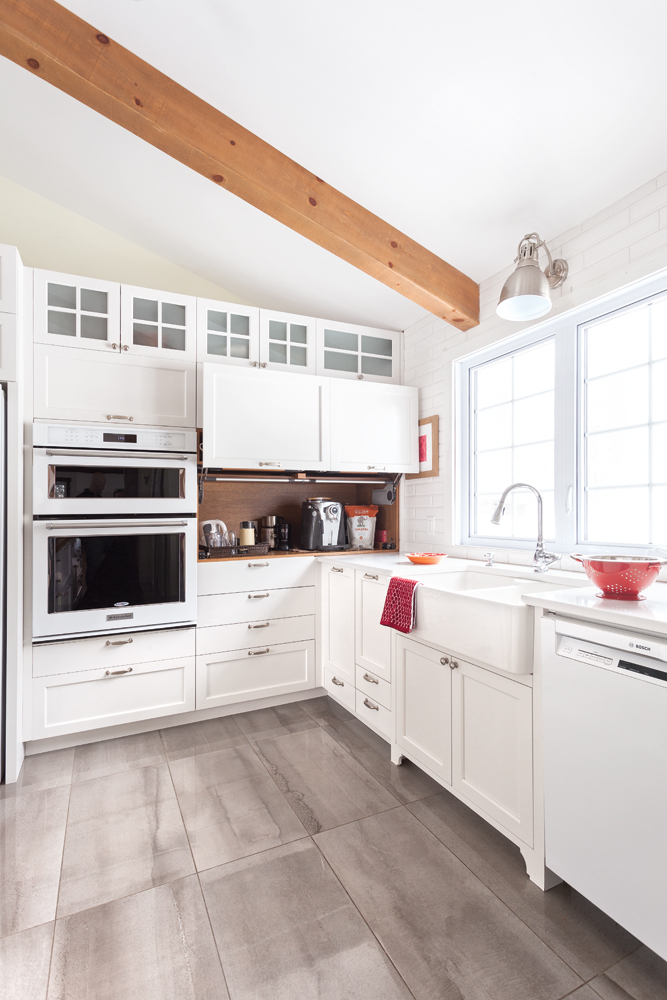
Le déjeuner autant que les pauses consacrées au thé ou au café ont leur importance dans notre journée. Hélas, dans nos vies pressées, ils sont la source de beaucoup d’encombrement dans la cuisine. On a donc trouvé la solution grâce à l’armoire à déjeuner ! Un comptoir caché derrière deux portes fermées ou derrière une porte d’armoire coulissante permet de faire disparaître bouilloires, machine à café ou grille-pain en un tour de main. Il est aussi possible d’organiser une station à déjeuner sur une tablette ou une desserte.
7- La cuisine wabi-sabi
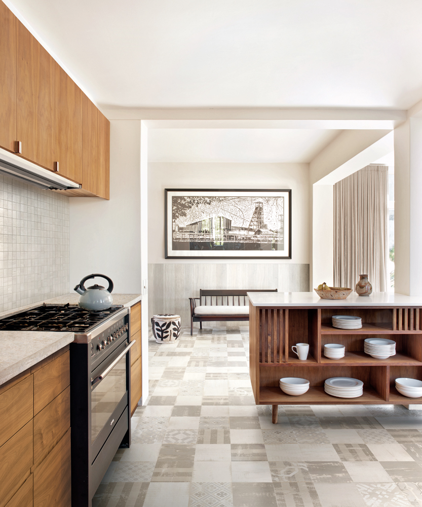
Le wabi-sabi, cette nouvelle tendance déco empruntée à la philosophie et l’art de vie japonais, ne manque pas de nous séduire ! D’un point de vue esthétique, le wabi fait référence au côté naturel des choses, à leur simplicité et à leur imperfection. Le sabi, quant à lui, célèbre le passage du temps, qui donne de la patine et de l’authenticité aux objets. Si on applique ce concept à l’aménagement de nos cuisines, il consiste à revenir à l’essentiel de ce que devrait être cette pièce : un lieu de préparation des repas connecté à notre environnement. On épure et on fait place aux matières brutes ainsi qu’aux objets qui ont un sens et une tradition, tels qu’une vieille table héritée de la famille ou un mortier en pierre. Bref, on prend le temps d’aménager sa cuisine différemment avec une approche minimaliste et réfléchie.
8- Les armoires en bois foncé
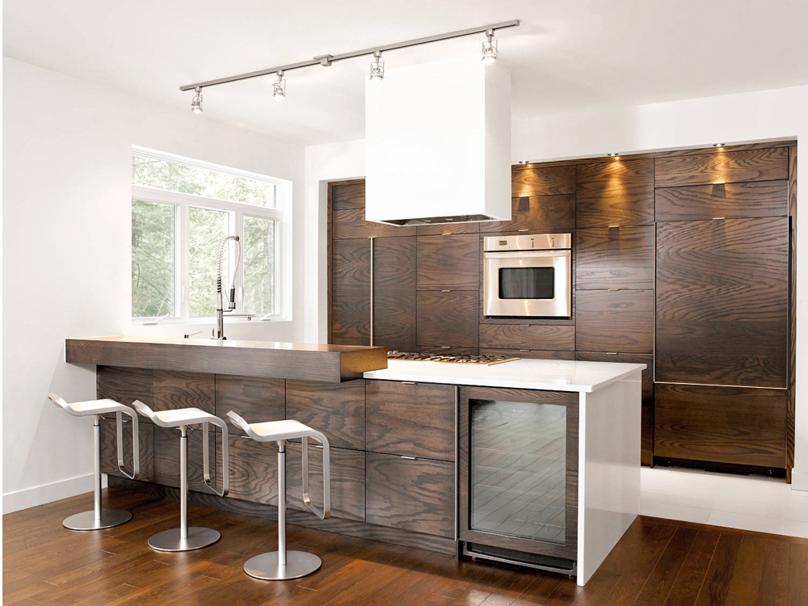
Les essences de bois foncé sont les plus nobles et elles resteront toujours très prisées dans nos cuisines. Ce qui a changé par rapport aux cuisines foncées d’il y a vingt ans, c’est que le noyer, les bois exotiques, les essences teintes ou toute imitation en thermoplastique ou en laminé européen réussissent à bien mettre en valeur le grain du bois. Par ailleurs, on n’hésite plus à marier différents finis et matériaux d’armoires. Les cuisines s’exhibent en deux couleurs (bois foncé en bas et blanc en haut, par exemple), intègrent des portes aux matériaux différents (verre, inox, laque…) et jouent sur les mélanges de matières (marbre, laiton, cuivre, or rose…).
9- Les électroménagers à personnaliser
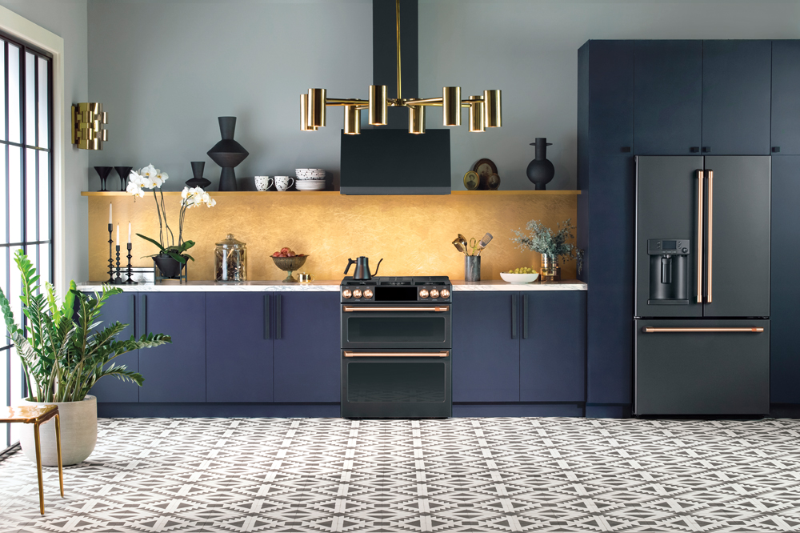
Des électroménagers qui ont du style, on en rêve tous ! Une belle cuisinière à gaz ou à induction comme dans une cuisine de chef n’a pas sa pareille pour élever l’élégance d’un cran dans la pièce. Les frigos au look rétro, eux, apportent une touche colorée à la déco. Les fabricants ont bien compris cet engouement et nous offrent désormais de nouveaux finis et de nouvelles possibilités de personnalisation. L’inox noir ainsi que les finis « sans empreintes » et mats ont fait leur apparition parmi les modèles grand public, tandis que de nouveaux électroménagers haut de gamme permettent de personnaliser la quincaillerie. Un exemple de marque qui se prête au jeu ? La compagnie General Electric, qui a lancé au Canada sa gamme Café afin de permettre aux consommateurs de sélectionner la façade, les boutons ainsi que les poignées de leurs électros dans le fini de leur choix.
10- Les accessoires écoresponsables
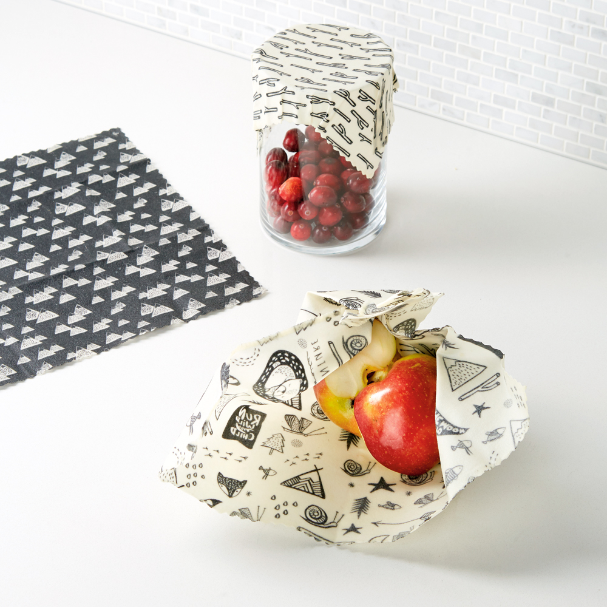
Aujourd’hui, notre prise de conscience grandissante de l’environnement et des changements climatiques nous pousse à vouloir éliminer progressivement le plastique de nos cuisines. Adieu les contenants avec bisphénol A, bonjour les pots en verre ! Une large gamme d’accessoires autrefois en plastique se voit désormais remplacée par une version écoresponsable et souvent beaucoup plus élégante. De la brosse à vaisselle en bambou à tête compostable, en passant par le sac à pain en tissu ou les ustensiles en bois, on adopte les accessoires artisanaux conçus et fabriqués dans le respect de notre planète.